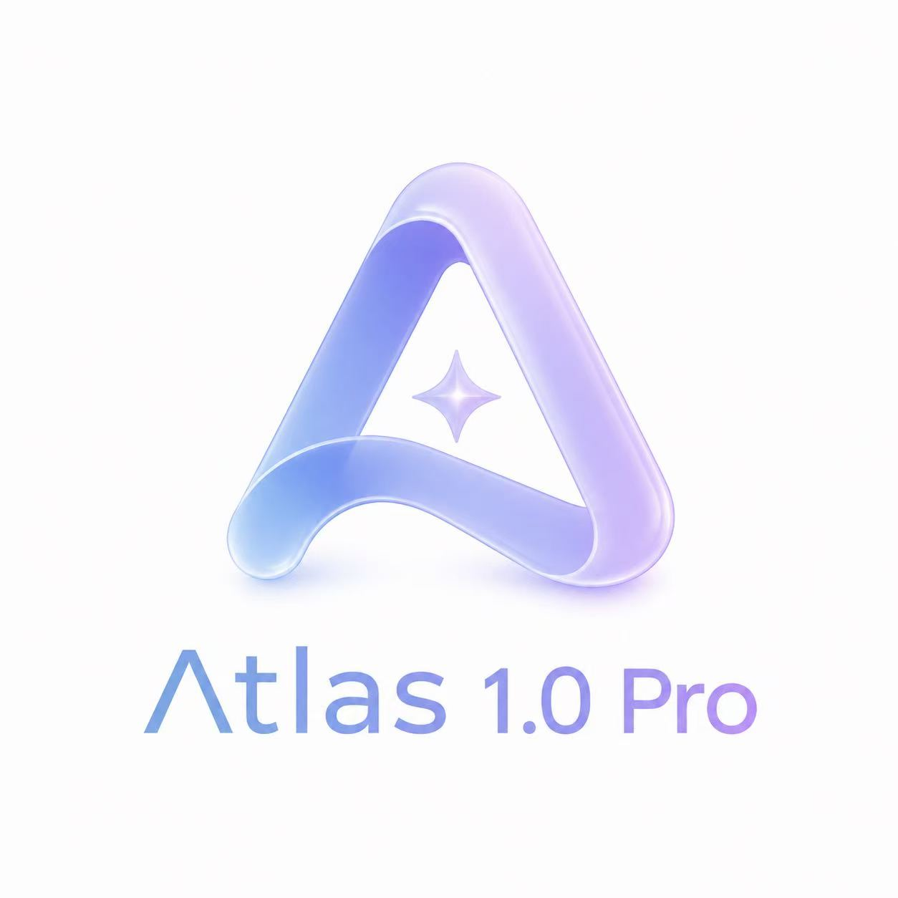

选择一个 AI 模型开始对话
AI 可能会犯错，请核查重要信息。
配置你的 API 密钥以使用不同的 AI 模型
密钥保存在当前浏览器。使用外部模型时，对话消息和 API Key 会直接发送给对应服务商，费用按服务商账户结算；请勿在公共设备保存密钥或发送敏感信息。
国内模型直连需要服务商允许当前网站跨域（CORS）；如连接失败，请检查网络和跨域配置。
默认 Base URL 仍可用。API Key 与 Base URL 地域需一致；使用北京地域 Workspace 域名时，请填写控制台提供的 https://<WorkspaceId>.cn-beijing.maas.aliyuncs.com/compatible-mode/v1。
API Key 模式填写模型列表中的 Model ID。默认使用北京地域 API 地址，模型与 API Key 的地域需与 Base URL 一致。
ATLAS 通过受保护的服务器连接模型，只有登录用户可用，每位用户每天最多 20 次。
请先登录，然后测试服务器连接。